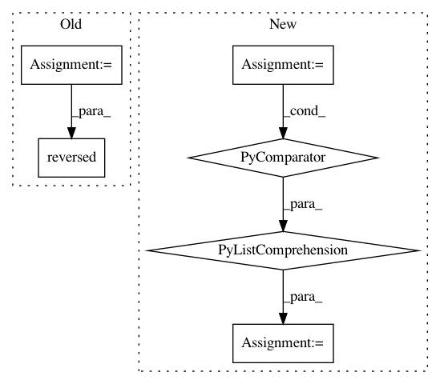

787133cb109c4052e02e5c924f6ad1c42af230b8,go.py,Position,__str__,#Position#,176
Before Change
raw_board_contents.append("".join(row))
captures = self.caps
row_labels = "1234567890123456789"[:N]
annotated_board_contents = reversed(["".join(r) for r in zip(row_labels, reversed(raw_board_contents), row_labels)])
header_footer_rows = [" " + "ABCDEFGHJKLMNOPQRST"[:N] + " "]
annotated_board = "\n".join(itertools.chain(header_footer_rows, annotated_board_contents, header_footer_rows))
details = "\nMove: {}. Captures B: {} W: {}\n".format(self.n + 1, *captures)
return annotated_board + details
After Change
raw_board_contents.append("".join(row))
captures = self.caps
row_labels = ["%2d " % i for i in range(N, 0, -1)]
annotated_board_contents = ["".join(r) for r in zip(row_labels, raw_board_contents, row_labels)]
header_footer_rows = [" " + " ".join("ABCDEFGHJKLMNOPQRST"[:N]) + " "]
annotated_board = "\n".join(itertools.chain(header_footer_rows, annotated_board_contents, header_footer_rows))
details = "\nMove: {}. Captures B: {} W: {}\n".format(self.n + 1, *captures)
In pattern: SUPERPATTERN
Frequency: 3
Non-data size: 6
Instances
Project Name: brilee/MuGo
Commit Name: 787133cb109c4052e02e5c924f6ad1c42af230b8
Time: 2016-06-30
Author: brian.kihoon.lee@gmail.com
File Name: go.py
Class Name: Position
Method Name: __str__
Project Name: tensorflow/datasets
Commit Name: 7b270c7526d74355fcf27496ac8ee5878aaa1683
Time: 2018-12-11
Author: rsepassi@google.com
File Name: tensorflow_datasets/scripts/document_datasets.py
Class Name:
Method Name: make_statistics_information
Project Name: dpressel/mead-baseline
Commit Name: 88345b88d60bd6e77ee214b83d037310713a0533
Time: 2018-07-22
Author: blester125@users.noreply.github.com
File Name: python/baseline/dy/tagger/model.py
Class Name: RNNTaggerModel
Method Name: forward